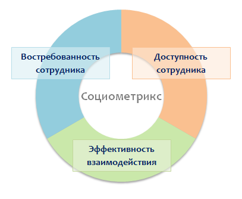
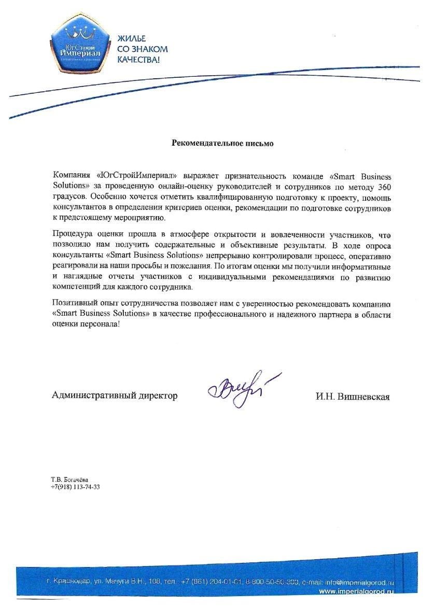

«Социометрикс» помогает оперативно выявить и устранить ключевые проблемы в организации работы сотрудников.
По результатам оценки заказчик получает подробный отчет об эффективности взаимодействия сотрудников и рабочих команд, с наглядной инфографикой и экспертными комментариями.
Проводим оценку на защищённых российских серверах в соответствии с Законом №152-ФЗ.
Социометрия – точная наука о взаимодействии людей, она помогает понять, почему одни команды работают слаженно и эффективно, а другие – «топчутся на месте» и пробуксовывают в решении рабочих задач.
Воспользуйтесь методикой «Социометрикс» для того, чтобы выявить и устранить ключевые проблемы в организации работы сотрудников.
По результатам оценки заказчик получает подробный отчёт об эффективности взаимодействия сотрудников и рабочих команд, с наглядной инфографикой и экспертными комментариями.
Опрос проводится на защищённых российских серверах в соответствии с Законом №152-ФЗ.
Методика «Социометрикс» позволяет оценить, насколько эффективно взаимодействуют между собой сотрудники, какие проблемы и «горячие точки» существуют в рабочих командах, где находятся зоны непродуктивности, кто работает «за двоих» и решает задачи, а кто лишь имитирует бурную деятельность.
В отличие от методики 360 градусов, «Социометрикс» оценивает не компетенции людей, а особенности их взаимодействия друг с другом с точки зрения достижения бизнес-результата.
«Социометрикс» проводится в форме онлайн-опроса, в ходе которого сотрудники оценивают друг друга по трём базовым показателям:

Показатели взаимодействия персонала
1. Востребованность
Востребованность означает, насколько участие, внимание и помощь сотрудника требуется его коллегам для решения рабочих задач, а также насколько интенсивно (часто, регулярно) коллеги взаимодействуют с сотрудником по рабочим вопросам.
Востребованность = нужность сотрудника для остальных.
2. Доступность
Данный показатель свидетельствует о том, насколько легко коллегам удается устанавливать рабочий контакт с сотрудником, добиваться его внимания.
Доступность = возможность оперативно взаимодействовать с сотрудником.
3. Эффективность взаимодействия
Эффективность взаимодействия показывает, насколько «весом» вклад сотрудника в решение общих рабочих задач, а также насколько быстро, профессионально и результативно сотрудник способен справляться с проблемами, возникающими в ходе совместной работы с коллегами.
Эффективность = умение сотрудника профессионально, своевременно и результативно решать рабочие задачи/проблемы.
Сотрудники и подразделения, работающие в удалённом формате (региональные филиалы или home office) требуют особого внимания. Эффективность дистанционной работы зависит от умения сотрудников взаимодействовать друг с другом, качественно выполнять поставленные задачи и своевременно отвечать на запросы.
Несмотря на очевидные преимущества удалённой работы, многие сотрудники отмечают также недостатки подобного формата. Трудности самоорганизации, отсутствие чётких регламентов, «живого» общения, проблемы коммуникации - эти и другие факторы могут приводить к снижению результативности удалённой работы до 25%. Это означает, что большинство подразделений и служб предприятия в дистанционном формате теряют до четверти заложенного в них потенциала!
С помощью «Социометрикса» можно оценить, насколько эффективно используется потенциал удалённых сотрудников и подразделений, выявить и устранить проблемы, снижающие производительность труда.
В среднем, продолжительность оценки персонала по методике «Социометрикс» занимает 7-14 рабочих дней (зависит от размера организации). При этом сотрудники минимально отвлекаются от работы для заполнения опросника.
По результатам оценки мы формируем подробный и наглядный отчёт о текущей эффективности работы сотрудников и рекомендациями по использованию потенциала каждого работника и команды в целом.
В случае необходимости, мы также составляем презентационный отчёт для высшего руководства компании или собственника бизнеса, где в простой и понятной форме отражены основные результаты и выводы исследования.
наверх
наверх ▲
Онлайн-оценка «Социометрикс»
от 4 500
Стоимость оценки включает*:
- Подготовка к оценке;
- Организация и администрирование онлайн-оценки;
- Обработка результатов;
- Подготовка отчёта.
* - стоимость указана за оценку 1 сотрудника и зависит от общего количества участников. Минимальная стоимость проекта - 60 000 руб.
После заполнения формы заказа наш консультант оперативно свяжется с вами для уточнения деталей и ответит на все интересующие вопросы.
Онлайн-оценка «Социометрикс»
Стоимость оценки включает*:
- Подготовка к оценке;
- Организация и администрирование онлайн-оценки;
- Обработка результатов;
- Подготовка отчёта.
* - стоимость указана за оценку 1 сотрудника и зависит от общего количества участников. Минимальная стоимость проекта - 60 000 руб.
После заполнения формы заказа наш консультант оперативно свяжется с вами для уточнения деталей и ответит на все интересующие вопросы.
и рекомендации:
{kind=link}

ЮгСтройИмпериал
(девелопмент)

Макита (Россия)

Eurasian Resources Group

UCell

ЗАО "МЕТТЭМ-Технологии"

ООО "Нордголд менеджмент"

Сбербанк Страхование
и многие другие...